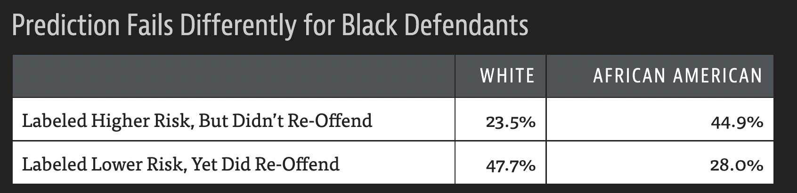

Model evaluation#
Libraries#
## Imports
import pandas as pd
import numpy as np
import matplotlib.pyplot as plt
import statsmodels.api as sm
import statsmodels.formula.api as smf
import seaborn as sns
import scipy.stats as ss
%matplotlib inline
%config InlineBackend.figure_format = 'retina' # makes figs nicer!
Goals of this lecture#
Why is evaluating models important? (Today’s focus: classifiers.)
Metrics:
Accuracy.
AIC.
Visualization techniques:
Why evaluate models?#
Science is about building models#
A central goal of science is building models of the world. This includes verbal explanations but also and especially statistical models.
Typically, we want our models to be:
Accurate: they should be a good description of the data.
Parsimonious: they shouldn’t be more complicated than they need to be.
Many possible models#
Given any dataset \(d\), there are many possible models \(m_1, m_2, ..., m_n\) we could build of that dataset.
Which model is “best”?
Here, “best” is always relative to some goal.
Best at predicting \(Y\)?
Most theoeretically interesting?
This process of selecting the best model is called model selection.
Comparing models#
In order to select the best model, researchers often compare multiple models in terms of their predictive power.
These model comparison approaches typically incorporate:
A measure of accuracy: how well do \(m_1\) vs. \(m_2\) fit the data, \(d\)?
A measure of complexity: how complex are \(m_1\) and \(m_2\), respectively?
Review: evaluating linear models#
We’ve already discussed several approaches to evaluating and comparing linear regression models:
\(R^2\): what proportion of variance in \(Y\) is explained by \(X\)?
\(Adj. R^2\): what proportion of variance in \(Y\) is explained by \(X\), adjusting for \(n\) and \(p\)?
\(MSE\): how much squared error does our model of \(Y\) typically have?
In combination with cross-validation, these techniques allow us to compare the accuracy of models while also penalizing over-fitting.
Bias-variance trade-off revisited#
Red line = test error.
Blue line = train error.

Evaluating classifiers: metrics#
Today, we’ll be focusing on evaluating classification models.
Some of these metrics also apply to linear models, like AIC.
But others (like precision and recall) are limited to categorical data.
Loading the dataset#
df_spam = pd.read_csv("data/models/classification/email.csv")
df_spam.head(2)
| spam | to_multiple | from | cc | sent_email | time | image | attach | dollar | winner | ... | viagra | password | num_char | line_breaks | format | re_subj | exclaim_subj | urgent_subj | exclaim_mess | number | |
|---|---|---|---|---|---|---|---|---|---|---|---|---|---|---|---|---|---|---|---|---|---|
| 0 | 0 | 0 | 1 | 0 | 0 | 2012-01-01T06:16:41Z | 0 | 0 | 0 | no | ... | 0 | 0 | 11.370 | 202 | 1 | 0 | 0 | 0 | 0 | big |
| 1 | 0 | 0 | 1 | 0 | 0 | 2012-01-01T07:03:59Z | 0 | 0 | 0 | no | ... | 0 | 0 | 10.504 | 202 | 1 | 0 | 0 | 0 | 1 | small |
2 rows × 21 columns
Accuracy#
The accuracy of a model is the number of correct predictions divided by the total number of observations.
\(Accuracy = \frac{TP + TN}{TP + TN + FP + FN}\)
Where:
\(TP\): True positive.
\(TN\): True negative.
\(FP\): False positive.
\(FN\): False negative.
Assessing accuracy#
A straightforward way to assess accuracy is to simply compare the true labels, \(Y\), to the predicted labels, \(\hat{Y}\).
true_labels = np.array([1, 0, 0, 1, 0, 0])
predicted_labels = np.array([1, 0, 1, 1, 0, 1])
correct_response = true_labels == predicted_labels
correct_response
array([ True, True, False, True, True, False])
### Accuracy
correct_response.mean()
0.6666666666666666
Using accuracy_score#
The accuracy_score function in sklearn will do this for you.
from sklearn.metrics import accuracy_score
accuracy_score(true_labels, predicted_labels)
0.6666666666666666
But where do the predictions come from?#
Many models, such as logistic regression, produce a probability of the outcome, i.e., \(p(spam)\).
How would you convert \(p(spam)\) to an actual prediction, i.e., spam vs. not spam?
This requires thresholding your probability score at a certain value of \(p\).
If \(p_i > t\):
spam.If \(p_i ≤ t\):
not spam.
Naive approach: threshold at \(p = .5\)#
A naive approach is to create a threshold at \(p = .5\).
predicted_probability = np.array([.6, .2, .7, .7, .4, .55])
predicted_labels = (predicted_probability > .5).astype(int)
predicted_labels
array([1, 0, 1, 1, 0, 1])
accuracy_score(predicted_labels, true_labels)
0.6666666666666666
Check-in#
Can anyone think of any potential issues with this naive threshold of \(p_t = .5\)?
The importance of thresholding#
Depending on the base rate of \(Y\) in your dataset, \(p_t = .5\) might generate either:
Too many false positives.
Too many false negatives.
Thresholding in practice (pt. 1)#
What do we notice about the distribution of predicted probabilities from our model predicting spam?
## Fit a model
mod_spam = smf.logit(data = df_spam, formula = "spam ~ winner + num_char + re_subj").fit()
## Get predictions
y_pred = mod_spam.predict()
## Visualize predicted probabilities
sns.histplot(x = y_pred, alpha = .5)
plt.axvline(x = .5, linestyle = "dotted")
Optimization terminated successfully.
Current function value: 0.271057
Iterations 9
<matplotlib.lines.Line2D at 0x13fd50090>
Thresholding in practice (pt. 2)#
If we use \(p_t = .5\), then we classify very few instances as
spam.Though because
spamis relatively rare, we actuall have decently high accuracy…
labels_t5 = y_pred > .5
print("Proportion classified as spam: {x}".format(x = round(labels_t5.mean(), 4)))
print("Proportion actual spam: {x}".format(x = round(df_spam['spam'].mean(), 4)))
print("Accuracy: {x}".format(x = round(accuracy_score(labels_t5, df_spam['spam']), 2)))
Proportion classified as spam: 0.0048
Proportion actual spam: 0.0936
Accuracy: 0.91
Thresholding in practice (pt. 3)#
We can also test out different thresholds to see how accuracy scales with \(p_t\).
Note: keep in mind that it also matters how the model is going wrong…
results = []
for t in np.arange(0, 1, .01):
labels = y_pred > t
accuracy = accuracy_score(labels, df_spam['spam'])
results.append({'accuracy': accuracy, 't': t, 'pred_spam': labels.mean()})
df_results = pd.DataFrame(results)
sns.lineplot(data = df_results, x = "t", y = "accuracy", label = "Accuracy")
sns.lineplot(data = df_results, x = "t", y = "pred_spam", label = "Predicted Spam")
<Axes: xlabel='t', ylabel='accuracy'>
Check-in#
Relating to thresholding: are there any issues with just naively using accuracy?
The problem of “naive accuracy”#
Depending on the base rate of \(Y\), very high accuracy could be achieved by simply always guessing the same thing.
If fraud is very rare (\(p(Y) = .01\)), then always guessing
not fraudwill yield \(99\%\) accuracy.However, it also means you’d miss every real instance of
fraud.
This raises the issue of Type 1 vs. Type 2 errors.
Type 1 vs. Type 2 Errors#
Models can be wrong in different ways.
A Type 1 Error is incorrectly rejecting the null hypothesis, i.e., a false positive.
A Type 2 Error is incorrectly failing to reject the null hypothesis, i.e., a false negative.
predicted label = |
predicted label = |
|
|---|---|---|
true label = |
Correct (True Negative) |
False Positive |
true label = |
False Negative |
Correct (True Positive) |
Review: Different errors have different costs#

Calculating the false positive rate#
The false positive rate is the proportion of negative classes (e.g.,
not spam) incorrectly categorized as a positive class (e.g.,spam).
\(FPR = \frac{FP}{N}\)
Where:
\(FP\): The number of false positives.
\(N\): The number of negative classes.
Demo: FPR#
## Demo: true data
true_labels = np.array([1, 0, 0, 1, 0, 0])
## Demo: predicted labels
predicted_labels = np.array([1, 0, 1, 1, 0, 1])
## Number of true negatives
N = len(true_labels[true_labels==0])
## Number of FP
FP = len(predicted_labels[(predicted_labels==1) & (true_labels == 0)])
## FP Rate
FP / N
0.5
Calculating the false negative rate#
The false negative rate is the proportion of positive classes (e.g.,
spam) incorrectly categorized as a negative class (e.g.,not spam).
\(FNR = \frac{FN}{P}\)
Where:
\(FN\): The number of false negatives.
\(P\): The number of positive classes.
Demo: FNR#
## Demo: true data
true_labels = np.array([1, 0, 0, 1, 0, 0])
## Demo: predicted labels
predicted_labels = np.array([1, 0, 1, 1, 0, 1])
## Number of true negatives
P = len(true_labels[true_labels==1])
## Number of FP
FN = len(predicted_labels[(predicted_labels==0) & (true_labels == 1)])
## FP Rate
FN / P
0.0
Coming up: confusion matrices#
Soon, we’ll discuss how to build a confusion matrix, which contains information about the false positive and false negative rates, as below:
predicted label = |
predicted label = |
|
|---|---|---|
true label = |
Correct (True Negative) |
False Positive |
true label = |
False Negative |
Correct (True Positive) |
Precision vs. Recall#
Precision and Recall are finer-grained measures of a model’s performance that account for false positives and false negatives.
Precision: what proportion of items classified as
spamare actuallyspam?Recall: what proportion of actual
spamwas successfully recognized asspam?
Calculating precision#
\(Precision = \frac{TP}{P*} = 1 - FPR\)
Where:
\(TP\): How many true positives?
\(P*\): How many predicted positives?
from sklearn.metrics import precision_score
true_labels = np.array([1, 0, 0, 1, 0, 0])
predicted_labels = np.array([1, 0, 1, 1, 0, 1])
precision_score(true_labels, predicted_labels)
0.5
Calculating recall#
\(Recall = \frac{TP}{P} = 1 - FNR\)
Where:
\(TP\): How many true positives?
\(P*\): How many actual positives?
from sklearn.metrics import recall_score
true_labels = np.array([1, 0, 0, 1, 0, 0])
predicted_labels = np.array([1, 0, 1, 1, 0, 1])
recall_score(true_labels, predicted_labels)
1.0
Akaike Information Criterion (AIC)#
Akaike Information Criterion (AIC) is a measure of model fit that factors in both the accuracy of the model and the complexity of the model.
\(AIC = 2k - 2*log(\mathcal{L})\)
Where:
\(k\): number of parameters (predictors) in the model.
\(\mathcal{L}\): the likelihood of the model.
What is “likelihood”?#
The likelihood of a model is a measure of the probability of the data, given the model.
Recall that a model \(M\) is a model of the data-generating process.
Likelihood is a way of asking:
If \(M\) generated predictions \(\hat{Y}\) from input \(X\)…
…How similar are these predictions to the actual data, \(Y\)}?
What does this remind you of?
Likelihood vs. \(RSS\)#
The residual sum of squares (\(RSS\)) measures:
\(RSS = \sum_i^N{(y_i - \hat{y}_i)^2}\)
Likelihood is technically a generalization of this approach:
\(\mathcal{L(X | \theta)} = \prod_i^Np(y_i | \theta)\)
Where:
\(\theta\): the parameters \(\beta_0, \beta_1, ..., \beta_n\).
\(p(y_i | \theta)\): the probability of an actual observation, \(y_i\), given the model parameters \(\theta\).
Extracting and interpreting AIC#
The actual \(AIC\) number won’t mean much, as it depends on the variance in the data, \(N\), and more (similar to \(MSE\)).
\(AIC\) is primarily useful for comparing different models.
A lower \(AIC\) is better.
m1 = smf.logit(data = df_spam, formula = "spam ~ num_char").fit()
m2 = smf.logit(data = df_spam, formula = "spam ~ winner").fit()
Optimization terminated successfully.
Current function value: 0.299210
Iterations 8
Optimization terminated successfully.
Current function value: 0.307661
Iterations 6
print(m1.aic)
print(m2.aic)
2350.4011465188078
2416.674224729642
\(AIC\) in practice#
Typically, \(AIC\) is rescaled by subtracting the \(AIC\) of the best model (i.e., the lowest \(AIC\) value) from each of the \(AIC\) values in question.
Thus, the best model has a rescaled \(AIC\) of
0.The rescaled \(AIC\) value reflects the difference from the best model.
rescaled = np.array([m1.aic, m2.aic]) - m1.aic
rescaled
array([ 0. , 66.27307821])
Evaluating models with visualizations#
Beyond metrics, we can evaluate models by making visualizations about their predictive success. We’ll focus on:
Confusion matrix.
ROC Curve.
Confusion matrix#
A confusion matrix compares a model’s predictions to actual values of \(Y\), allowing a viewer to determine which classes were most frequently “confused” (i.e., where the error rate was highest).
predicted label = |
predicted label = |
|
|---|---|---|
true label = |
Correct (True Negative) |
False Positive |
true label = |
False Negative |
Correct (True Positive) |
Confusion matrix in practice#
sklearn has a confusion_matrix function, which takes as input the true labels (y_true) and the predicted labels (y_pred).
To interpret the output:
The rows refer to the real labels of \(Y\).
The columns refer to the predicted labels, \(\hat{Y}\).
The diagonal of the matrix are the correct responses.
Ideally, all other cells should be zero: no errors.
Each cell thus refers to the intersection:
How many times did we predict
0when it was actually a1?How many times did we predict
1when it was actually a0?
Check-in#
Based on this confusion matrix, what is the number of:
True positives?
False positives?
True negatives?
False negatives?
from sklearn.metrics import confusion_matrix
cm = confusion_matrix(true_labels, predicted_labels)
cm
array([[2, 2],
[0, 2]])
Normalizing our output#
We can also normalize the output using the normalize = 'true' parameter.
Based on this confusion matrix, what is our false positive rate? What about our false negative rate?
cm = confusion_matrix(true_labels, predicted_labels, normalize = 'true')
cm
array([[0.5, 0.5],
[0. , 1. ]])
Visualizing with seaborn#
We can use seaborn.heatmap to visualize the output of a confusion matrix.
sns.heatmap(cm, annot = True)
<Axes: >
ROC Curve#
A Receiver Operating Characteristic (ROC) Curve illustrates the ability of a binary classifier to discriminate between classes as its threshold (\(p_t\)) is adjusted.
x-axis: false positive rate for a given threshold.
y-axis: true positive rate for a given threshold.
Check-in#
If \(p_t = 0\) (i.e., everything with \(p_i ≥ 0\) is labeled spam), what should our false positive rate and true positive rate be?
Solution#
When \(p_t = 0\) (i.e., everything with \(p_i ≥ 0\) is labeled spam):
Our true positive rate will be \(100\%\): we never miss an instance of
spam.Our false positive rate will also be \(100\%\): we classify every instance of
not spamasspam.
ROC Curve in practice#
Steps involved in building an ROC Curve:
Fit a classifier to your data, and extract predicted probabilities \(p_i\).
Consider a range of thresholds of \(p_t\), from \([0, 1]\).
For each threshold, calculate the false positive rate (FPR) and true positive rate (TPR).
Plot
TPR ~ FPRand compare to random performance.(Optional) Calculate the area under the curve (AUC) between the classifier performance and random chance.
Step 1: Fit a model#
model = smf.logit(data = df_spam, formula = "spam ~ winner + num_char + re_subj").fit()
y_pred = model.predict()
Optimization terminated successfully.
Current function value: 0.271057
Iterations 9
p = plt.hist(y_pred,alpha = .5)
plt.xlabel("Predicted p(spam)")
Text(0.5, 0, 'Predicted p(spam)')
Step 2: Consider a range of thresholds#
thresholds = np.arange(0, 1, .01)
true_labels = df_spam['spam']
Step 3: Calculate FPR and TPR#
results = []
for t in thresholds:
predicted_labels = y_pred > t
## Calculate confusion matrix
cm = confusion_matrix(true_labels, predicted_labels, normalize = 'true')
## Extract FPR and TPR
fpr = cm[0, 1]
tpr = cm[1, 1]
results.append({'tpr': tpr, 'fpr': fpr})
Step 4: Visualize#
df_results = pd.DataFrame(results)
sns.lineplot(data = df_results, x = "fpr", y = "tpr")
sns.lineplot(data = df_results, x = "fpr", y = "fpr", linestyle = "dotted", color = "red")
<Axes: xlabel='fpr', ylabel='tpr'>
Why ROC curve is useful#
In principle, we can plot the ROC curve for multiple models.
This gives us a clear way to visualize the relative rate of false positives and true positives for different models.
Depending on whether we’re worried more about FPR or TPR, this may help us decide which model is best.
roc_curve in sklearn#
We can also use the roc_curve function in sklearn to build an ROC Curve much more easily!
roc_curve(y_true, y_score)
This returns the fpr, tpr, and thresholds used.
from sklearn.metrics import roc_curve
fpr, tpr, thresholds = roc_curve(true_labels, y_pred)
sns.lineplot(x = fpr, y = tpr)
sns.lineplot(x = fpr, y = fpr, linestyle = "dotted")
<Axes: >
Conclusion#
Once we’ve built a statistical model, we need to evaluate it.
There are many approaches to evaluating models, but we’ve discussed a few:
Using metrics like accuracy, precision/recall, and \(AIC\).
Using visualization techniques like a confusion matrix and ROC Curve.